Vahid məlumat mənbəyi
Mənzillər, sahiblər və rollar tək modeldədir. Sürətli axtarış, növbə dəyişəndə isə daha az səhv.
Bina idarəçiliyi cədvəl xaosu olmadan
eMTK idarəetmə şirkətinin gündəlik işini sakit rəqəmsal çərçivəyə yığır: kim yaşayır, nə hesablanıb, nə ödənilib və nə qalıb görülməlidir. Əl ilə zənglər azalır — sizin üçün proqnozlaşdırılan axın, sakinlər üçün isə daha çox etibar qalır.
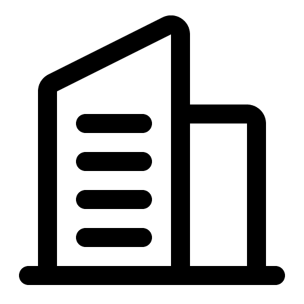
Məlumatlar tək yerdə olanda mühasib, dispetçer və sakin arasında «kor zona» azalır. eMTK adi aylıq dövrə uyğundur: tariflər → hesablamalar → xatırlatmalar → ödənişlər → hesabat.
Mənzillər, sahiblər və rollar tək modeldədir. Sürətli axtarış, növbə dəyişəndə isə daha az səhv.
Hesablamalar və ödənişlər bir-birinə bağlıdır: balans məntiqi yenilənir, cədvəldə «təxmini gözlə» ilə yox.
Email və messencerlər prosesin parçasıdır — ayın sonunda ayrıca qaçış deyil.
Aşağıda işlək eMTK layihəsindən materiallar var: firma nişanı və giriş ekranının vizual qatı — sakinlər və əməkdaşlar hər gün gördüyü eyni tipografika və palitra tətbiqin daxilində də belədir.
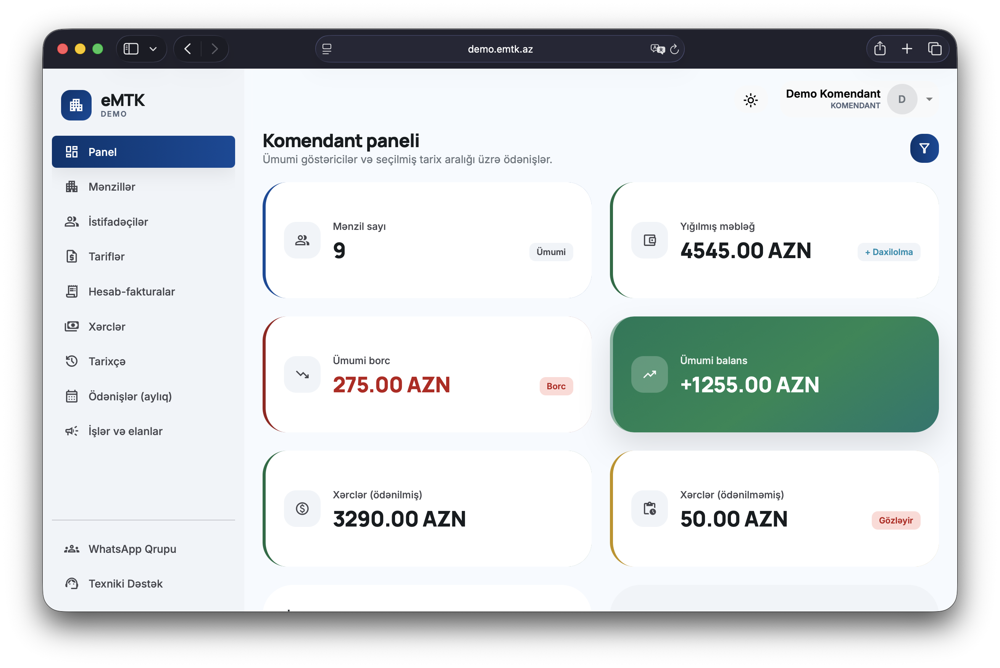

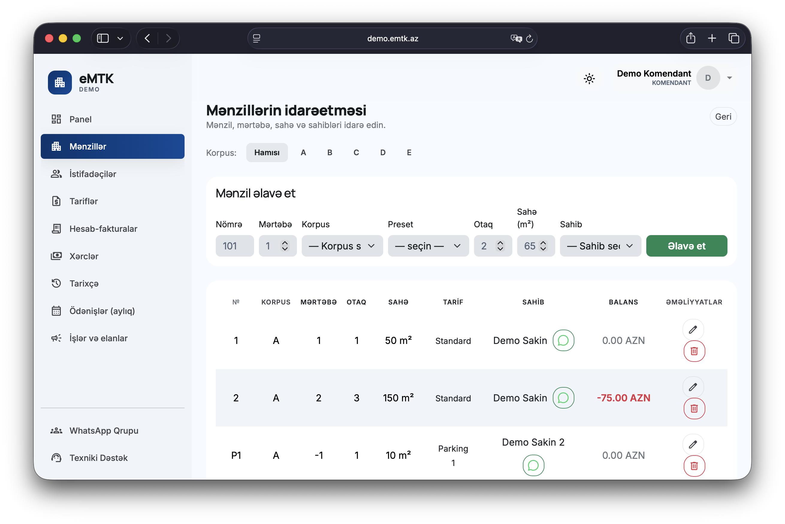
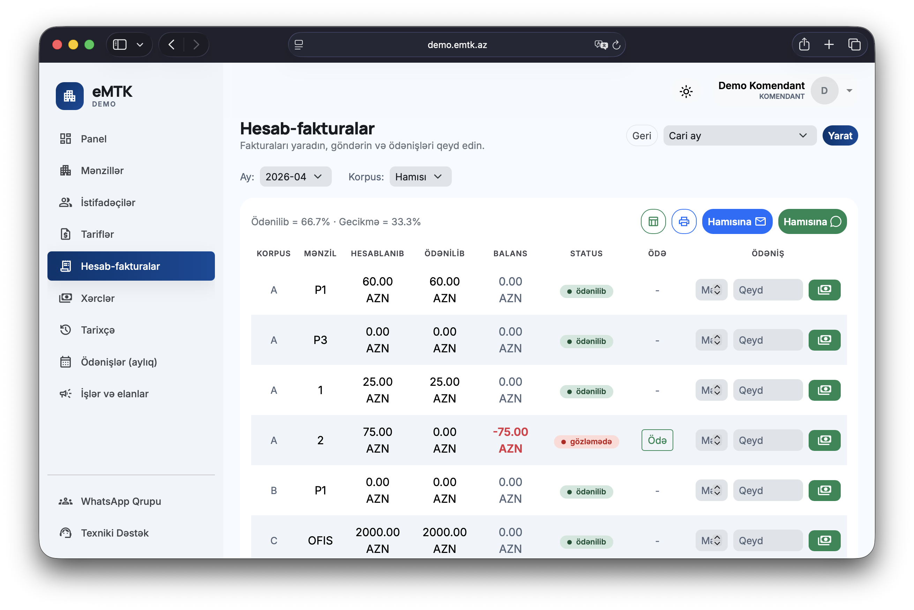
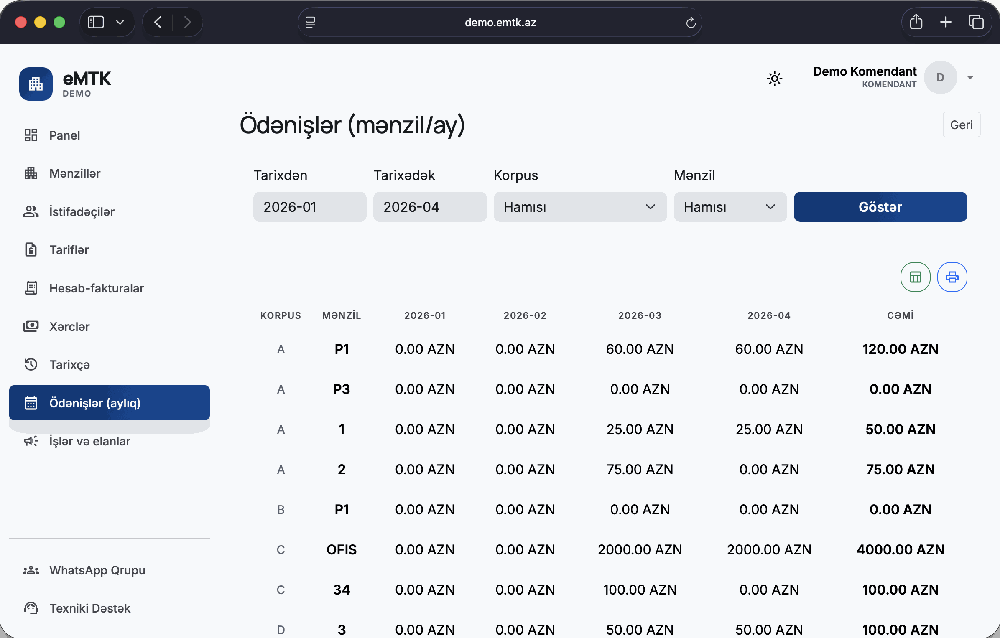
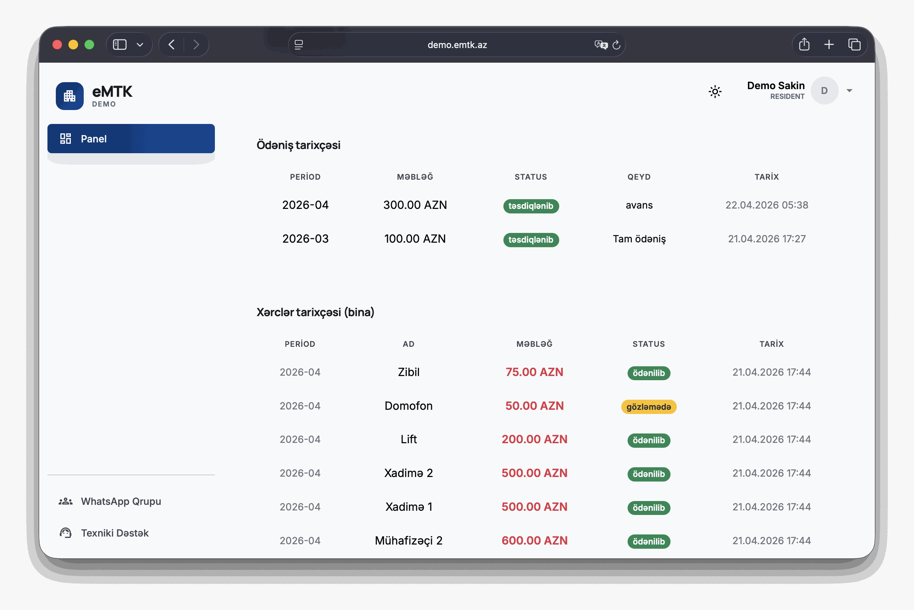
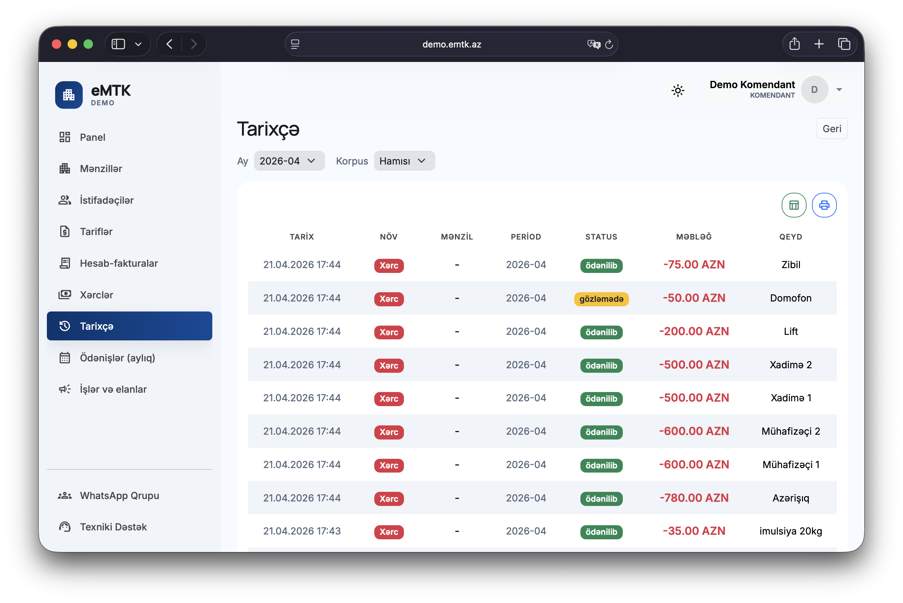
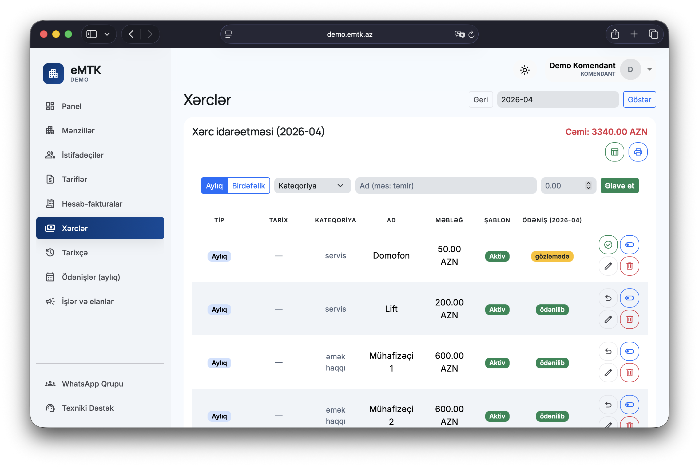
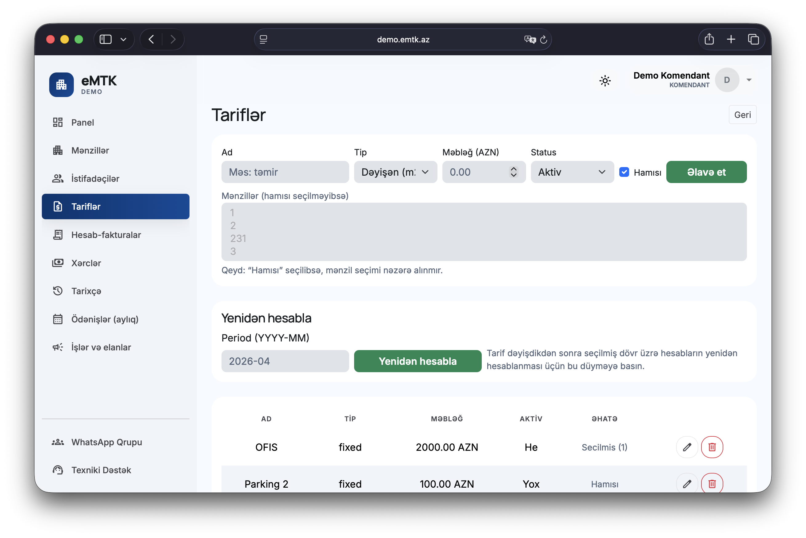
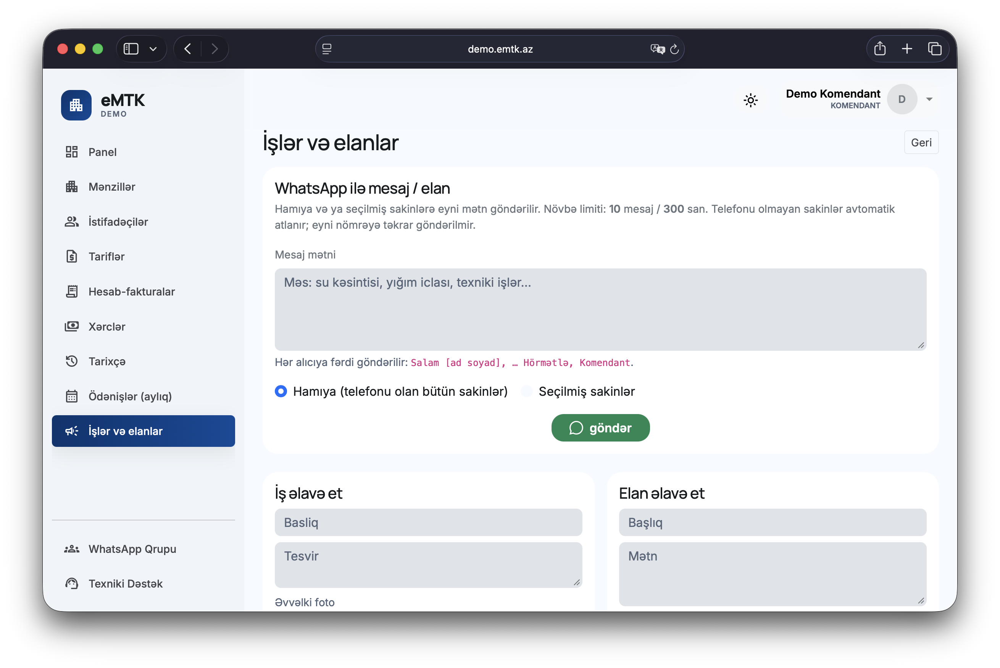
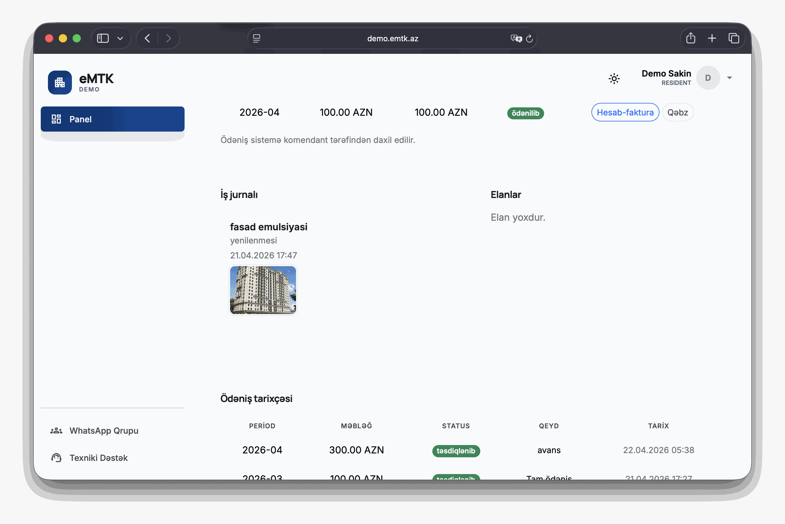
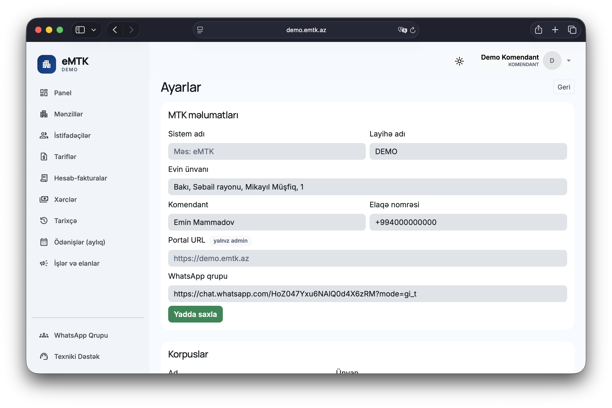
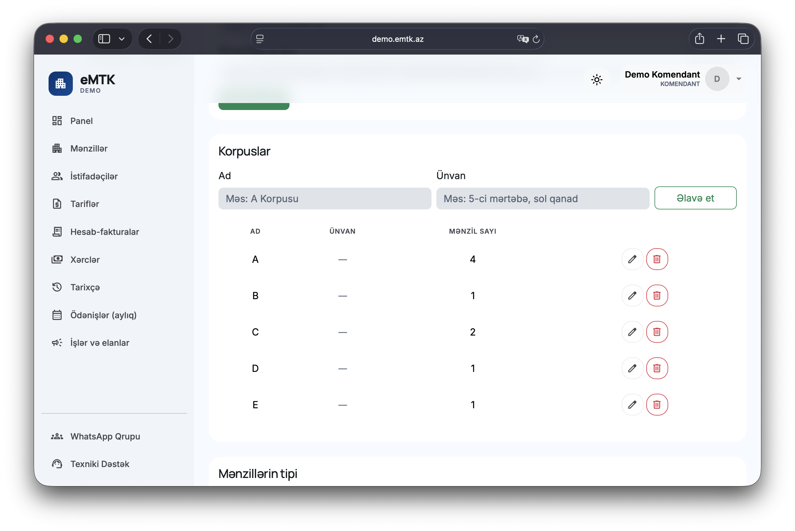
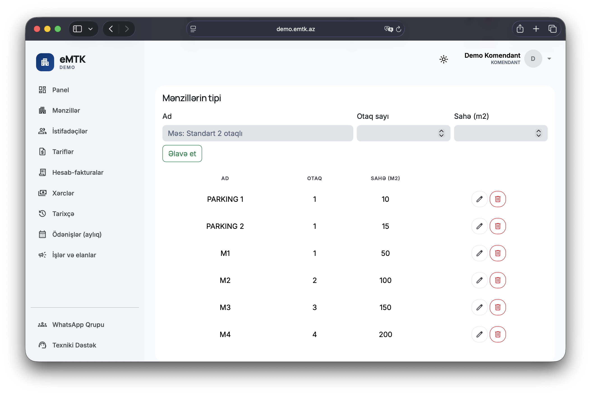

İnterfeysdə nişan
Canlı portalın başlığında eyni fayl — əlfəcinlərdə və mobil ekranda tanınma.
Qısa zəng — platformanın prosesinizə necə oturduğunu artıq nəzəriyyə və yüz səhifəlik slaydsuz izah edərik.
Əlaqəyə keçBir neçə cümlədə yazın: neçə bina aparırsınız və ən çox nə ağrıyır — hesab-fakturalar, pul toplanması, yoxsa hesabat? İnsani dildə cavab verəcəyik, məcburi mailinq olmadan.
Burada ayrıca «sayt admini» yoxdur — bu, məhsulu təqdim etmək üçün yüngül vizitkadir. Bütün iş ssenariləri öz binanız və ya obyekt şəbəkəniz üçün qurduğunuz eMTK portalının özündə yaşayır.